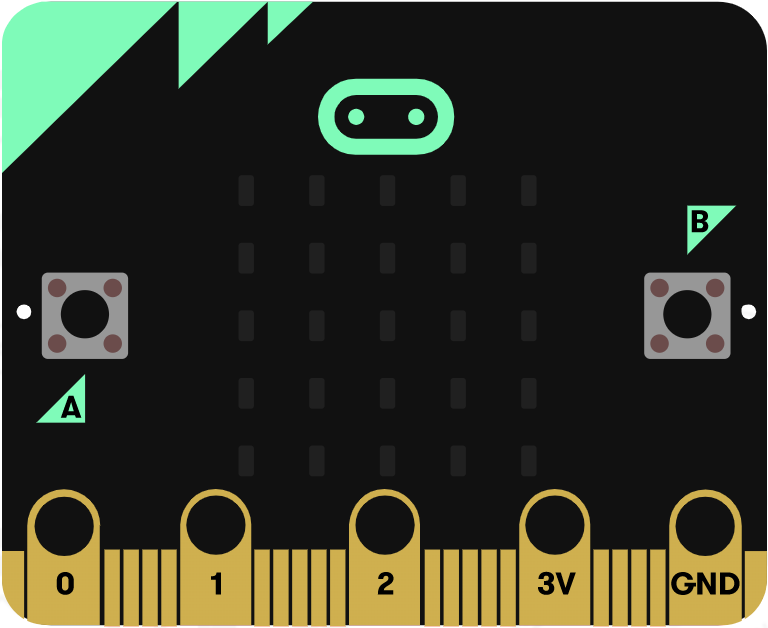
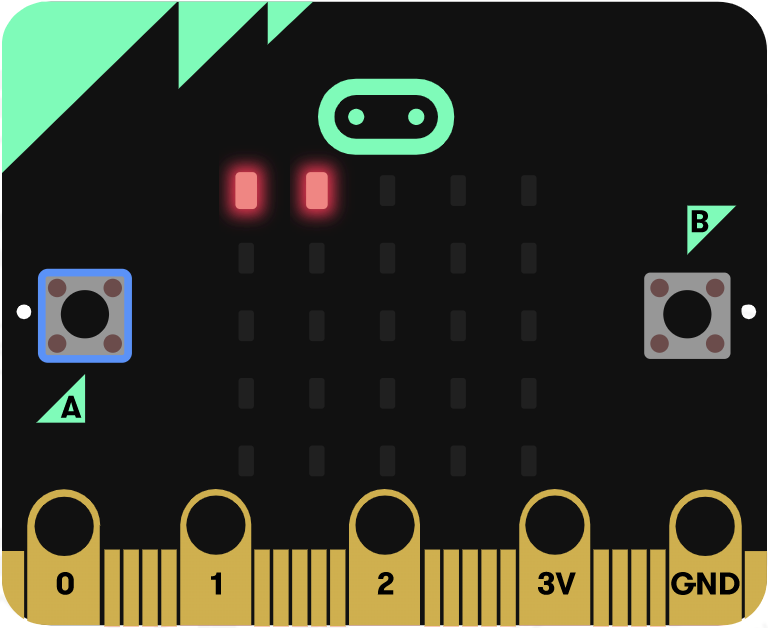
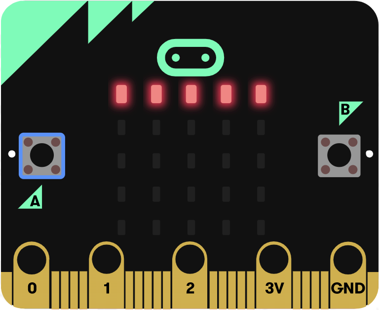
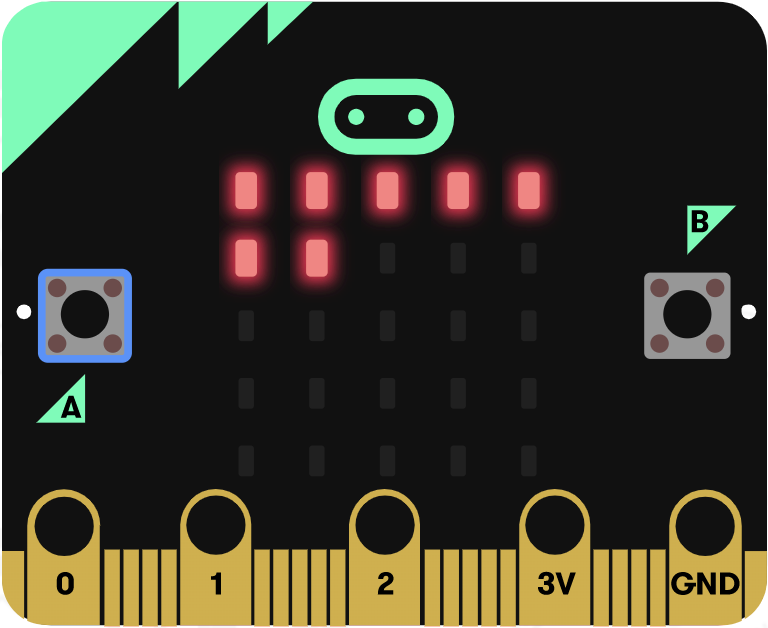
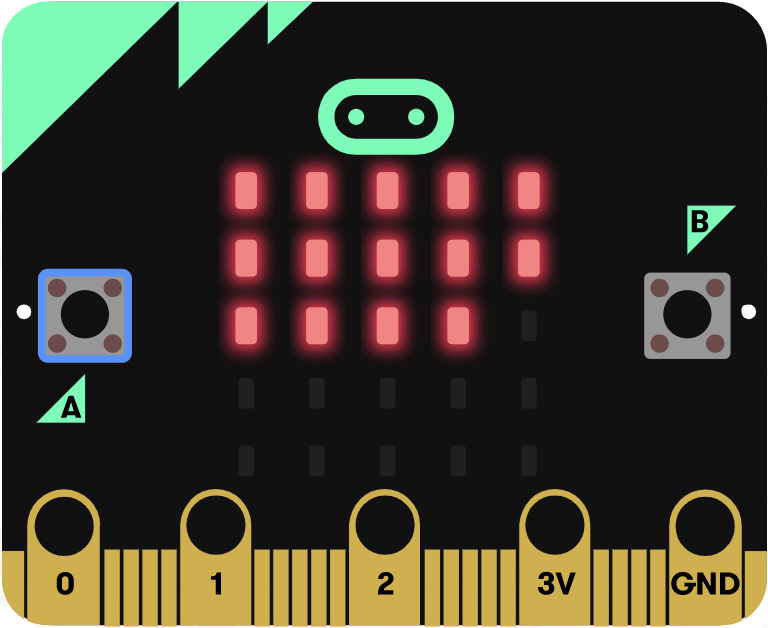
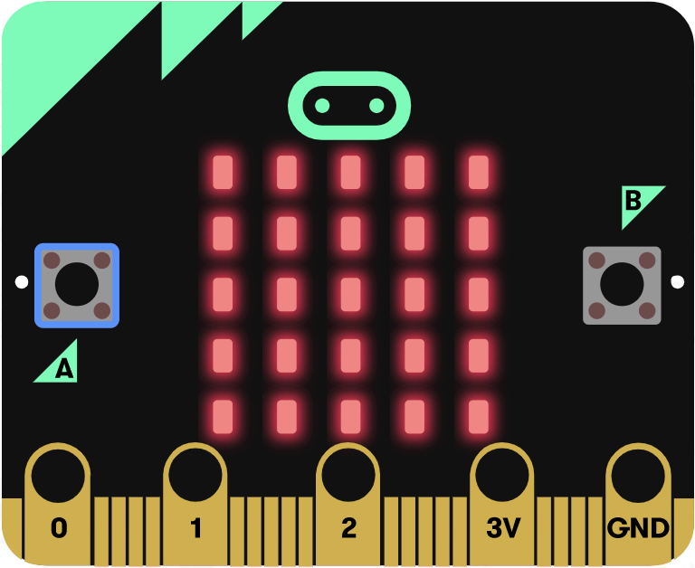

Introduction to micro:bit
This morning, you will discover what will be the brain of the mobile robot you will build: the micro:bit. You'll see that this controller comes already out of the box with sensors and actuators, which are the building blocks of a robot, and you'll learn how to interact with them.
What you will need
Every pair of learners will need:
- A computer equipped with a connection to internet and a browser (ideally Chrome)
- One micro:bit
- A usb cable to connect the micro:bit to the computer.
Programming Micro:bit
Gather all the material listed above and connect the micro:bit to the computer. You should see an external drive appear on your computer called MICROBIT.
To program the micro:bit you will need an editor. For this open the Python online editor for micro:bit on your web browser. On this page you'll be facing with a big black area with some python code. This area is the editor where you'll type your programs. On top of that you should see different buttons/icons that will allow you to interact with your computer, and the micro:bit directly if you are using Chrome.
When you open the editor, it comes with an "Hello, World!" example. To start, you have to learn to transfer a program onto the micro:bit. For that:
- First option: you click the Download button. This will download the program as an .hex file named microbit_program.hex on your computer. To put it in the micro:bit, drag and drop the .hex to the MICROBIT external drive.
- Second and easiest option if you have chrome: click Connect, select the micro:bit in the menu and click again on connect, and now the Download button should have transformed into a Flash button. This button allows you to directly put (flash) the program from the web-browser to the micro:bit.
At the end of both options, an orange LED should blink on the micro:bit, informing you about the transmission. When the transfer is over the program should start automatically and you should see the execution of the program on the red LEDs of the micro:bit. Congratulation, you gave your first program to the micro:bit !
Micro:bit specific functions
The structure of a program on a microcontroller is and will almost always be as follow: first, an initialisation, then a loop. Take the time to identify those two parts in the previous program.
Here is another program to show you some specific micro:bit functions that are available to use its buttons (button_a.was_pressed()) and its LED matrix (display.set_pixel() and display.clear()):
# Initialisation
# Get standard librairies
from microbit import *
# Loop
while True:
if button_a.was_pressed():
display.set_pixel(0,2,9)
sleep(1000)
display.clear()
if button_b.was_pressed():
display.set_pixel(4,2,9)
sleep(1000)
display.clear()
sleep(100)
Exercice 1
- 1.1 Flash the micro:bit with this program. What do the the arguments of the functions set_pixel() and sleep() correspond to ? To answer either try to change the program or read the do (sleep doc, display doc) or even better, do both.
- 1.2 Execute the instruction display.set_pixel(-1,2,9) in your program and see what happens.
Solution exercise 1.2
Normally you should see the error "Line ... valueError index out of bounds". That's what will happen if you ask the micro:bit to do something it cannot do. It will tell you the exact line where you shoud look to solve you problem, and why (in this case the first argument of set_pixel can only accept values from 0 to 4). With experience, most of the time, only the line number will be enough for you to correct your mistake.
Your first program
| displayPositiveNumber(0) | displayPositiveNumber(1) | displayPositiveNumber(2) | displayPositiveNumber(5) |
|---|---|---|---|
|  |  |  |
Figure: A program to display rapidely the value of a variable from 0 to 5.
In the previous exercise you learned to interact with some basic functions of micro:bit. It is now time to bring your knowledge of python into play to interact with those. By reinvesting your knowledge of variables, conditions, loops and functions you will define a function that will help us work with micro:bit all through the week.
The functions display.show() and display.scroll() are powerful and can show many types of variables (integers, floats, strings) on the screen of the micro:bit. Such functions are useful to debug in showing us some valuable information. However, as we saw with the "Hello, World!" example, this function is also not very reactive, while we need to be reactive in robotics. We can not wait 2 seconds for each piece of information. So you will define a function which will solve this problem.
Exercice 2
- 2.1. Define an integer variable x, initialise it to 0 and display its value every 100 ms using display.scroll().
- 2.2. Program the micro:bit so that you can use the buttons A and B to increase and decrease the value of x. What happens if x > 9, can you show x value every 100 ms ?
- 2.3. Forget about the value of x for this sub-exercise. Replace the line that was displaying the value of x and instead, use a for i in range(4): ... loop and the function display.set_pixel() to light up the first line of LEDs.
- 2.4. Modify your program to display the value of x as in the pictures above. Hint: you can either change the for loop, either add a condition.
- 2.5. Define a function displayPositiveNumber(n), that shows the value of an integer n for n in [0-5] on the LED matrix.
Going further
| displayPositiveNumber(0) | displayPositiveNumber(7) | displayPositiveNumber(14) | displayPositiveNumber(25) |
|---|---|---|---|
|  |  |  |
If we plug some sensors to the micro:bit and we want to display some quantitative information coming from them, displayPositiveNumber(n) is exactly the sort of function we need. However, for now, our resolution is very little (only 6 possible values can be displayed). To get a richer feedback, let's use the whole LED matrix. For this you'll modify the previous function slightly:
def displayPositiveNumber(d):
display.clear()
for i in range(d):
display.set_pixel(i%5,int(i/5),9)
Exercice 3
- 3.1. On a piece of paper, represent a 5x5 grid and set a number for each row and column, starting on the top left with the coordinate (0,0). For i = {4,5,6,24} compute i%5 (meaning i mod 5... meaning the rest of the integer division of i by 5) and int(i/5) (meaning the integer part of i/5). Write down the value of i in the grid at the position (i%5,int(i/5)).
- 3.2. Now that you should have a better understanding of this function, test it by updating the code in the previous exercise. In the end you should have a program to set the value of x using the buttons and display its value for x in [0-25].
- 3.3. (Optional) The function displayPositiveNumber() is reliable only for values in [0-25]. Make it more reliable by adding a condition so that if the provided argument is not in that range, you will display something special (for instance one LED on in the middle of the LED matrix).
- 3.4. (Optional) There are different ways to write a function such as displayPositiveNumber(d). Find other ways to define the function. You could for instance use nested loops (a loop in a loop) or use two counters (integer variables) and a condition (that would allows to not use modulo or the integer division).
You are now equipped with a function which is going to be very useful this afternoon. To reuse it this afternoon, save it using the "Load/Save" button, followed by clicking the "Download Python Script" button. This will allow you to save it as a python file an reload it this afternoon. If you did not understand the functioning of this function, take some time to do so. Talk to the people around you if you need help.
Conclusion
This morning you saw one key component of what makes a robot: its controller. The controller is the brain of the robot which does the interface between its sensors and its actuators. But you saw more than that. Indeed by programming the micro:bit you already had a quick go at doing the interface between some integrated sensors (buttons) and actuators (LED matrix) of the board.
While this sensors/controller/actuators design is the standard design for mobile robots, it also applies to many other fields. Look around you and you'll see this arrangement is standard in technology as well as in life. A smartphone comes with sensors: a camera, touch(screen), microphones, radio receptor, accelerometer, compas; and with actuators: a screen, speakers and radio emettor. Human beings come with sensors too, although they are harder to isolate than on machine, but making it simple we could say that most of them come equipped with eyes, ears, nose, skin, tongue and proprioceptors (too often forgotten).
We also saw that for the controller to make the link between the sensors and the actuators, you need to give it a program. While you used the micro:bit this morning, what you learn applies to most other controllers:
- A programming language is most of the time composed of standard building blocks such as instructions, variables, conditions, loops and functions
- The structure of the program of a robot comes almost always with an initialisation and a loop (and sometimes with interrupts but I invite you to discover this when you are already familiar with the basics).